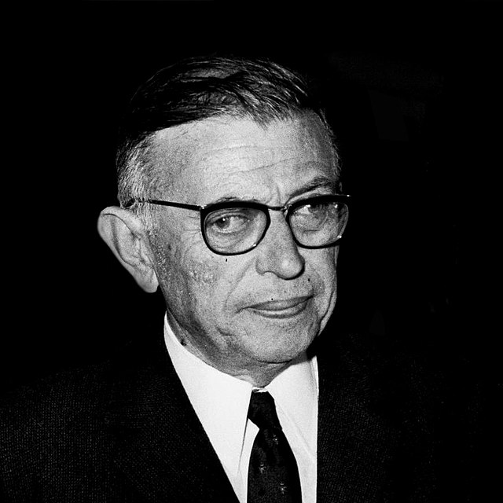

Nesse projeto em Filosofia tive que fazer um PowerPoint sobre a minha vida universitária e a capa era para ser colocada uma imagem com a qual eu me identificasse.

Esse texto é um sobre o que é felicidade para mim relacionando com o que Sartre disse sobre o assunto: O que me faz feliz? Para Epicuro, ser feliz depende dos prazeres moderados da vida, isso é, prazer pelas coisas não materiais e o alcance da tranquilidade e sensatez, pensando nisso é que eu me baseei para reponder a pergunta. Cada indivíduo tem algum hobbie que lhe traz felicidade, eu tenho diversos, porém o mais predominante é a música, tanto no tocar, escutar e estudar, a música me traz uma sensação única e com certeza é um dos motivos de eu ser feliz. Para mim, tocar piano é uma fuga da realidade, tocar baixo numa banda de amigos ou até mesmo sozinho em casa me faz descarregar os sentimentos, o simples ato de escutar música me leva à outra realidade. É lógico que nenhum humano vive sem relações, minha família e meus amigos me fazem feliz também. Principalmente meu pai, minha mãe, irmã e irmão, são as pessoas em que estão mais ligadas à minha vida. Meus amigos mais próximos também me trazem muitos momentos bons, me ajudam em momentos difíceis e temos diálogos incríveis.